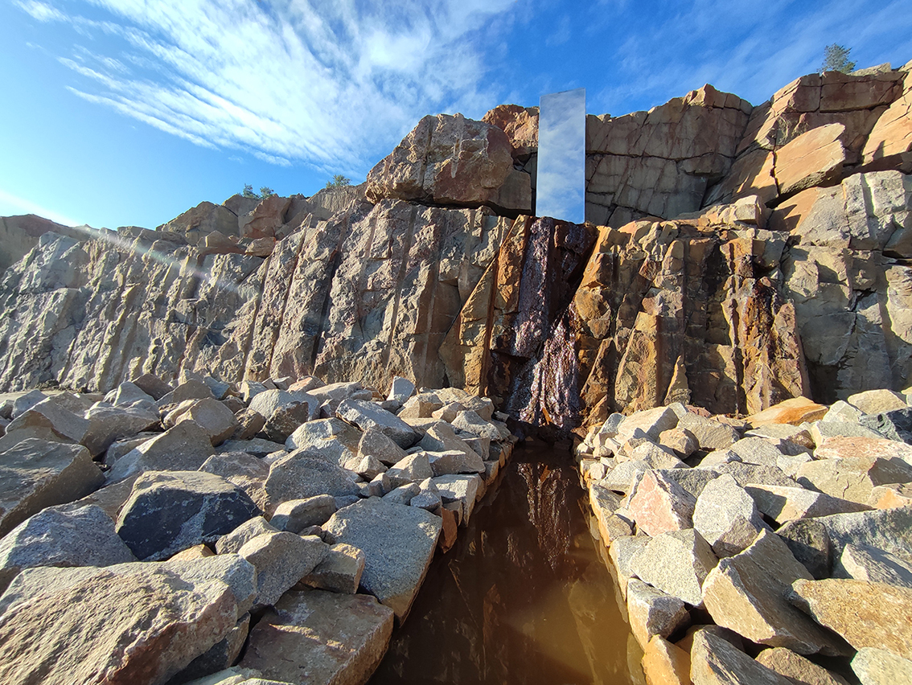
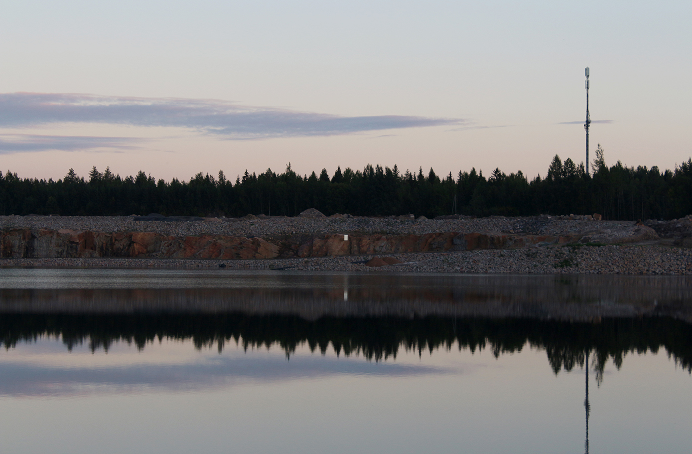
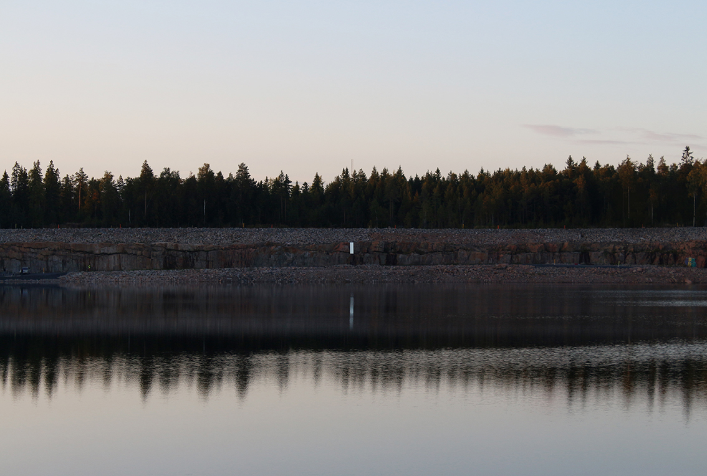
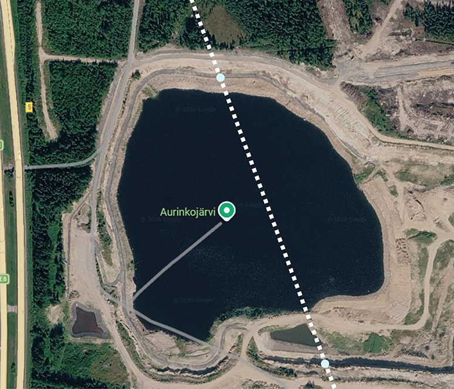
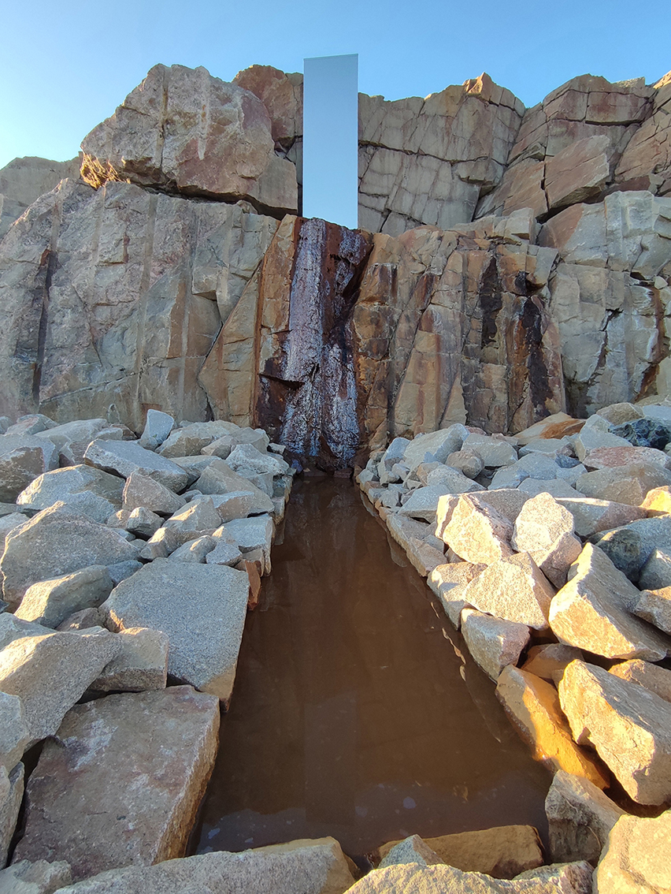

CUT
2026 · Art Linnakallio International Environmental Art Symposium · Zeniitti, Kempele, Finland · Curators: Moosa Myllykangas, Taija Jyrkäs

Concept
A giant cut through the quarry, from one side to the other. It exists through two mirrored interventions placed on opposite sides.
It introduces an artificial geometry into the chaos of the irregular quarry walls.
When we first arrived at the site, there was already a small waterfall running down the rock. In the sunlight, the water shimmered like a mirror. We decided to work with this existing element and later formed a pool beneath it. Stone, sky and water.
The quarry is already a landscape of cuts and traces. CUT adds another one: an imagined line that crosses the space, unites it, reminds.
Materials: mirror-polished stainless steel, stone, water



